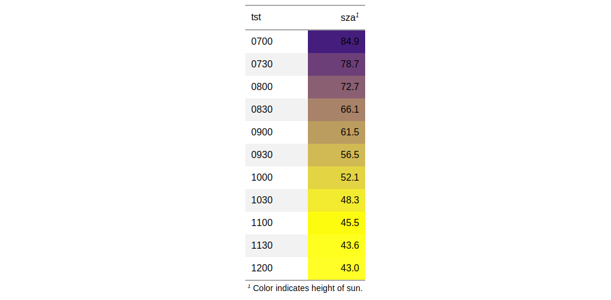

| tab_footnote {gt} | R Documentation |
The tab_footnote() function can make it a painless process to add a
footnote to a gt table. There are two components to a footnote: (1) a
glyph that is attached to the targeted cell text, and (2) the footnote text
(that starts with the corresponding glyph) that is placed in the table's
footer area. Each call of tab_footnote() will add a different note,
and one or more cells can be targeted via the location helper functions
(e.g., cells_data(), cells_column_labels(),
etc.).
tab_footnote(data, footnote, locations)
data |
a table object that is created using the |
footnote |
the text to be used in the footnote. We can optionally use
the |
locations |
the cell or set of cells to be associated with the footnote.
Supplying any of the |
The formatting of the footnotes can be controlled through the use of various
parameters in the tab_options() function:
footnote.sep: allows for a choice of the separator between
consecutive footnotes in the table footer. By default, this is set to a
linebreak.
footnote.glyph: the set of sequential characters or numbers
used to identify the footnotes.
footnote.font.size: the size of the font used in the footnote
section.
footnote.padding: the amount of padding to apply between the
footnote and source note sections in the table footer.
an object of class gt_tbl.

Other table-part creation/modification functions: gt_preview,
gt, tab_header,
tab_options, tab_row_group,
tab_source_note, tab_spanner,
tab_stubhead_label, tab_style
# Use `sza` to create a gt table; color
# the `sza` column using the `data_color()`
# function, then, add a footnote to the
# `sza` column label explaining what the
# color scale signifies
tab_1 <-
sza %>%
dplyr::filter(
latitude == 20 &
month == "jan" &
!is.na(sza)
) %>%
dplyr::select(-latitude, -month) %>%
gt() %>%
data_color(
columns = vars(sza),
colors = scales::col_numeric(
palette = c("white", "yellow", "navyblue"),
domain = c(0, 90))
) %>%
tab_footnote(
footnote = "Color indicates height of sun.",
locations = cells_column_labels(
columns = vars(sza))
)